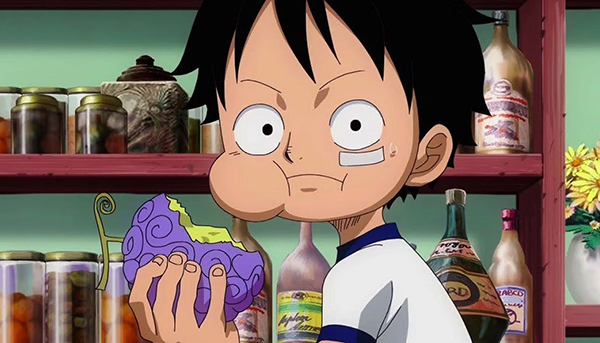
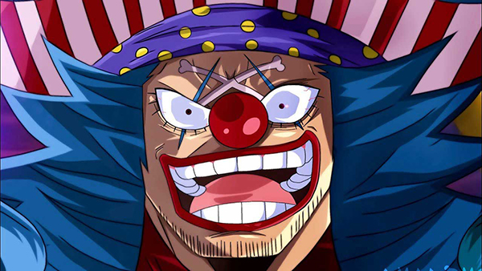
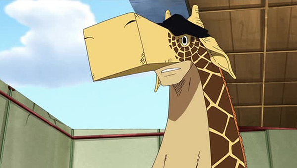
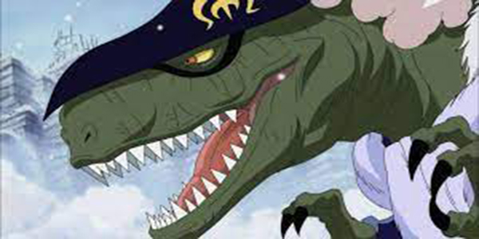
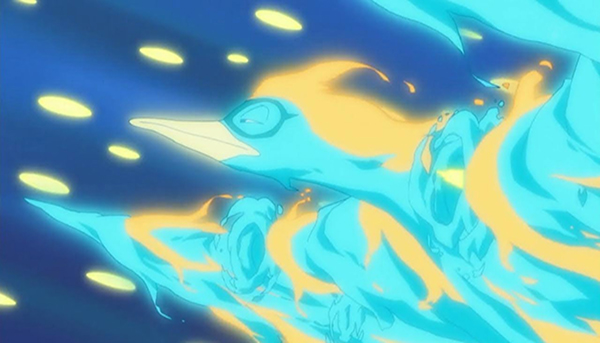
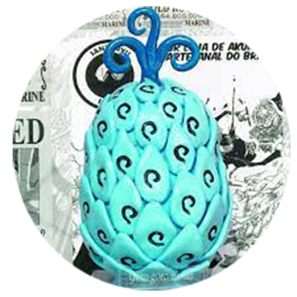
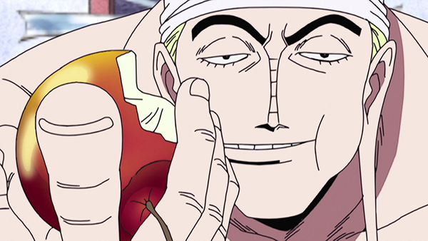

O poder das Akuma No Mi
As Frutas do Diabo são frutas misteriosas e especiais espalhadas por todo o mundo, conhecidas por conceder aos seus consumidores poderes sobre-humanos permanentes, bem como uma incapacidade permanente de nadar.

Gomu-Gomu No Mi
Essa fruta acima é A Gomu Gomu no Mi, conhecida originalmente como a Hito Hito no Mi, Modelo: Nika, é uma Akuma no Mi do tipo Zoan Mítica que permite ao usuário se transformar no lendário "Deus do Sol" Nika e ganhar seus atributos, notavelmente um corpo com propriedades da borracha. O Governo Mundial a renomeou em um esforço para apagar o nome original da história, e como resultado, ela foi reclassificada como uma fruta do tipo Paramecia, que transforma o usuário em um Homem-Borracha (ゴム人間 Gomu Ningen?).
Acredita-se que as Akuma no Mi foram criadas por um demônio dos mares e que o segredo do poder delas está escondido em algum lugar da Grande Linha. Como são raras, muitas pessoas acreditam que elas são apenas um mito. Esse foi o caso de Nami, que só foi acreditar na existência delas após ver uma frente a frente.
Essa fruta foi roubada por: Shanks "O Ruivo " e seu bando logo no inicio do anime e foi acidentalmente ingerida pelo protagonista da série: Monkey D. Luffy
Tipos de Akuma No Mi
Existem básicamente 3 tipos sendo elas:
- Paramecia
- Zoan
- Logia
E dentro das do tipo Zoan existem subtipos sendo elas:
- Comuns
- Ancestral
- Místicas
Paramecia
Paramecia é um dos três tipos de Akuma no Mi. Quem as come ganha o poder de modificar sua estrutura corporal, produzir substâncias e manipular essas substâncias e o ambiente (como um terremoto), dependendo da Akuma no Mi

No geral, as Akuma no Mi de Paramecia, são frutas que dão aos seus usuários poderes que não sejam de se transformar em elementos da natureza, como nas Logias, ou mesmo de transformação em animais, como nas Zoans.
Um exemplo do tipo paramecia é a propria fruta do "Palhaço Buggy" que utiliza os poderes da Bara-Bara No Mi
Zoan
Vamos começar falando sobre as Comuns.
As frutas do tipo Zoan Comum são capazes de dar ao usuário a capacidade de se tranformar completamente ou também parcialmente no animal que a fruta representa.
Ushi-Ushi No Mi
Vemos que o poder dessa Akuma No Mi "Ushi-Ushi No Mi" faz parte da categoria "Comum" na obra. Essa Fruta da ao usuario o poder de se transformar em uma girafa e de usar todos os atributos fisicos do respectivo animal
Zoan Ancestral
As Zoans Ancestrais (「動物ゾオン系」古代種 Zōn-kei Kodaishu?, Panini: Pré-Histórico), são aparentemente um tipo muito mais raro de Zoans, que permitem aos usuários se transformar em animais antigos e extintos, o que inclui répteis pré-históricos como os dinossauros. O primeiro poder de Zoan Ancestral visto foi a Ryu Ryu no Mi, Modelo: Alossauro de X Drake.
Zoan Mistica
Zoan Mística (Zōn-kei Genjūshu) é uma variação de Akuma no Mi do tipo Zoan, sendo mais forte do que uma Zoan normal porém mais difícil de se encontrar (mais rara que uma Logia). Até agora foram apresentadas apenas duas Akumas no mi do tipo Zoan Mística: Hito Hito no Mi: Modelo Buda e Tori Tori no Mi: Modelo Fênix. Ao contrário das outras subclasses de Zoan, essa é a mais impressionante devido aos seus poderes únicos. Ela permite que os usuários se transformem em criaturas mitológicas. Suas habilidades são parecidas com as de um Logia e de um Paramecia.
O nome dessa fruta ainda não foi revelado, muitos especulam ser "Tori Tori no Mi: Modelo Fênix", mas até que Oda nos conte, ela é identificada como Fruta da Fênix.
Logia
As Logias são caracterizadas por dar ao usuário a capacidade de se tornar, criar e controlar um elemento ou força da natureza. Se todos esses três requisitos não forem atendidos, o fruto do diabo não poderá ser classificado como um tipo Logia. Frutas do diabo que permitem ao usuário criar e controlar veneno, cera ou qualquer outra substância que não permita que o próprio corpo do usuário se transforme naquele elemento são classificadas como Paramecia; a Yami Yami no Mi é a única exceção. Da mesma forma, as Frutas do Diabo, que transformam o corpo do usuário em uma substância, mas não conferem o poder de controlar e criar a dita substância, também são classificadas como Paramecia. Além disso, mesmo que os três requisitos sejam cumpridos, mas a substância em si não é uma força da natureza ou ocorre naturalmente, então ela não pode ser classificada como uma Logia.
Como exemplo podemos citar Enel que consegue a sua Akuma no mi da classe Logia. Goro Goro no Mi, o que lhe permite se transformar em, criar e controlar um raio. Ele permite-lhe utilizar uma variedade de ataques baseados relâmpago golpeando os tambores em suas costas, que são quase todos nomeados após deuses do trovão de várias culturas.
A fruta mais "Poderosa" em One Piece
Gura Gura no Mi - Fruta do Tremor
Para fechar, a fruta de um dos maiores piratas de todos os tempos, conhecida por ser capaz de destruir o mundo: do Barba Branca, a Gura Gura no Mi.
Essa é a Fruta do Tremor, uma Paramecia que, basicamente, dá a habilidade para o usuário de criar vibrações, ondas de choque e terremotos que podem afetar qualquer meio, do alto das montanhas ao fundo do mar e a própria atmosfera.

Pela demonstração do Newgate em Marineford, ele podia, literalmente, moldar a ilha - isso incapacitado - como quisesse. Por tudo isso, não é exagero dizer que a Gura Gura no Mi é a Akuma no MI mais poderosa mostrada em One Piece, afinal de contas, ela realmente pode destruir o mundo todo.